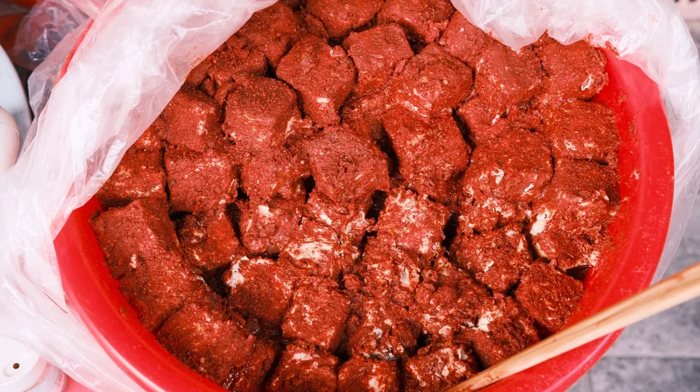

종가 장류, 제대로 고르는 법: 간장·된장 종류별 맛과 활용 완벽 비교
사진: Caio Pezzo / Pexels (무료 이미지, 출처 표기)
종가 장류란 무엇인가요? 전통의 가치와 특징

맛있는 집밥의 시작은 좋은 장류에서 비롯됩니다. 시중에 너무 많은 종류의 간장과 된장 중 우리 집 식탁에 딱 맞는 제품을 고르기란 쉽지 않죠. 특히 '종가'라는 이름이 붙은 장류는 오랜 세월 전승된 전통의 깊은 맛과 정신을 기대하게 합니다. 종가 장류는 대개 특정 가문이나 지역의 전통 방식 그대로 제조되어 그 지역 특유의 기후와 환경, 장인의 손맛이 담겨있다는 특징이 있습니다.
이는 단순히 맛을 넘어선 문화적 가치를 지니며, 대량 생산 방식과 차별화되는 고유한 풍미를 선사합니다. 전통적인 방법으로 콩을 발효시키고 숙성하는 과정을 거치기에, 일반 시판 장류에 비해 시간과 정성이 더 많이 투입됩니다.
종가 간장: 양조간장, 국간장, 진간장 제대로 알기
한국 요리에서 빼놓을 수 없는 간장은 요리의 맛을 좌우하는 핵심 조미료입니다. 종가에서 만드는 간장은 숙성 기간과 제조 방식에 따라 크게 양조간장, 국간장(조선간장), 진간장으로 나눌 수 있습니다.
- 양조간장: 콩과 밀을 주원료로 하여 발효 및 숙성시킨 간장입니다. 깊고 부드러운 맛과 향이 특징으로, 주로 무침, 볶음, 소스 등 요리에 직접 넣어 맛을 내거나 찍어 먹는 용도로 활용됩니다. 감칠맛이 풍부하여 현대인의 입맛에 잘 맞습니다.
- 국간장 (조선간장): 메주콩만을 사용해 담그는 전통 간장입니다. 염도가 높고 색이 연해 국이나 나물 요리에 주로 사용됩니다. 재료 본연의 색을 해치지 않으면서 간을 맞출 때 유용하며, 특유의 구수한 향이 한식의 맛을 살려줍니다.
- 진간장: 양조간장에 산분해 간장 등을 혼합하여 만든 간장입니다. 짙은 색과 단맛이 특징으로, 조림이나 볶음 요리에 적합합니다. 고온에서 요리해도 맛과 색이 잘 변하지 않아 갈비찜, 불고기 등 양념 요리에 자주 쓰입니다.
종가 된장: 재래식, 개량식, 혼합식 된장 비교
구수하고 깊은 맛의 된장은 한국인의 밥상에서 빼놓을 수 없는 발효식품입니다. 종가에서 만드는 된장 또한 전통 방식을 고수하며 다양한 형태로 존재하는데, 재료와 제조법에 따라 크게 재래식 된장, 개량식 된장, 혼합식 된장으로 구분됩니다.
- 재래식 된장: 오직 메주콩과 소금물로만 담가 장시간 숙성시킨 전통 된장입니다. 깊고 구수한 맛과 향, 그리고 다소 거친 질감이 특징입니다. 된장찌개, 강된장 등 된장 본연의 맛을 살리는 요리에 가장 적합하며, 발효 과정에서 생성되는 유익균이 풍부합니다.
- 개량식 된장: 콩 외에 쌀, 보리, 밀 등의 곡물을 함께 발효시켜 만든 된장입니다. 재래식 된장보다 단맛이 강하고 부드러운 질감으로, 찌개뿐만 아니라 쌈장 등 다양한 요리에 활용됩니다. 대량 생산이 용이하며, 감칠맛이 좋아 많은 가정에서 선호합니다.
- 혼합식 된장: 재래식 된장과 개량식 된장, 또는 된장과 간장을 섞어 만든 된장입니다. 두 가지 장류의 장점을 결합하여 맛의 균형을 맞춘 제품이 많습니다. 특정 맛보다는 대중적인 맛을 지향하며, 다양한 요리에 두루 사용하기 좋습니다.
우리 집 식탁에 맞는 종가 장류 고르는 체크리스트
수많은 종가 장류 제품 앞에서 어떤 것을 선택해야 할지 고민이라면, 다음 체크리스트를 참고해 보세요. 2026년 11월 기준으로 다음과 같은 점들을 고려하면 실패 없는 선택을 할 수 있습니다.
- 원재료 및 제조 방식 확인: 콩의 원산지, 국산 콩 사용 여부, 전통 방식(옹기 숙성 등) 고수 여부를 확인하세요. '식품명인' 또는 '전통식품' 인증을 받은 제품은 신뢰도를 높여줍니다.
- 첨가물 유무: 인공 색소, 방부제, 감미료 등 불필요한 첨가물이 없는지 성분표를 꼼꼼히 살펴보세요.
- 염도 확인: 건강을 생각한다면 나트륨 함량을 확인하는 것이 좋습니다. 염도가 낮은 제품을 선호하거나, 요리 시 사용량을 조절하는 것이 중요합니다.
- 용도 고려: 주로 어떤 요리에 사용할지 생각해보고 그에 맞는 종류의 장류를 선택하는 것이 좋습니다. 여러 종류를 구비해두면 다양한 요리에 활용하기 편리합니다.
종가 장류, 더 맛있게 보관하고 활용하는 팁
고심해서 고른 종가 장류를 더 오랫동안 신선하고 맛있게 즐기기 위해서는 올바른 보관법과 현명한 활용이 중요합니다. 장류는 발효식품이므로 온도 변화에 민감합니다.
간장류는 개봉 후 공기 접촉을 최소화하고 서늘한 곳이나 냉장고에 보관하는 것이 좋습니다. 된장류 역시 밀폐 용기에 담아 냉장 보관해야 변질을 막고 특유의 맛과 향을 오래 유지할 수 있습니다. 곰팡이가 피거나 이상한 냄새가 난다면 과감히 버리는 것이 안전합니다. 정확한 보관법은 제품 포장에 기재된 내용을 따르시길 권장합니다.
된장을 이용한 요리 시에는 고기나 채소를 먼저 볶아 풍미를 더한 뒤 된장을 넣으면 더욱 깊은 맛을 낼 수 있습니다. 간장의 경우, 요리의 마지막 단계에 넣어주면 간장의 향을 살릴 수 있습니다. 또한, 종가 장류는 그 자체로도 훌륭한 맛을 내므로, 너무 많은 양념을 추가하기보다는 장류 본연의 맛을 즐기는 것이 좋습니다.
자주 묻는 질문: 종가 장류 Q&A
Q. 종가 장류는 일반 장류보다 왜 비싼가요?
A. 종가 장류는 대개 전통적인 수작업 방식으로 소량 생산되며, 오랜 숙성 기간과 고급 원재료(국산 콩 등)를 사용하기 때문에 제조 단가가 높습니다. 이는 단순히 가격이 비싸다는 것을 넘어, 장인 정신과 전통 방식을 고수하는 가치가 반영된 것이라고 볼 수 있습니다.
Q. 된장에서 하얀 곰팡이가 피었어요. 먹어도 될까요?
A. 된장 표면에 피어나는 하얀 곰팡이는 '골마지'라고 불리며, 효모균의 일종입니다. 이는 된장이 잘 발효되고 있다는 증거로, 인체에 해롭지 않으므로 걷어내고 드셔도 됩니다. 하지만 검은색이나 푸른색 곰팡이는 변질의 신호이므로 섭취하지 않는 것이 좋습니다.
Q. 종가 장류는 유통기한이 얼마나 되나요?
A. 간장은 밀봉 상태로 서늘한 곳에 보관하면 제조일로부터 약 2년 정도 유통기한을 가지며, 된장은 1년에서 2년 정도입니다. 하지만 개봉 후에는 공기와의 접촉으로 인해 변질될 수 있으므로, 냉장 보관하고 최대한 빨리 소비하는 것이 좋습니다. 정확한 유통기한은 제품 포장의 표기 사항을 확인하시길 바랍니다.
🔗 이 글도 함께 보면 좋아요: 사찰 워케이션 완벽 가이드: 와이파이·업무환경 제대로 활용하는 법
관련 추천 상품
종가 간장, 종가 된장, 전통 장류, 수제 된장 관련 인기 상품 보러가기
이 포스팅은 쿠팡 파트너스 활동의 일환으로, 이에 따른 일정액의 수수료를 제공받습니다.